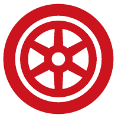
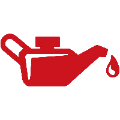
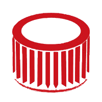

|  |
|
| Ruedas |
Cadenas |
Revisión al menos una vez al mes y siempre que vayas a hacer un viaje largo de la presión del neumático, profundidad del dibujo y estado de la cubierta.
|
Con las cadenas hablamos de limpiar, engrasar y tensar. Si te olvidas de hacer cualquiera de las tres tendrás problemas, seguro.
|
|
|
| Luces |
Frenos |
Revisión de todas las luces antes de ponerte en marcha para descartar si es de la bombilla o hay algún problema eléctrico.
|
Revisión integral de los frenos de tu moto incluirá latiguillos, pinzas, pistones, manetas, palanca, bomba, pastillas, discos y líquido.
|
|  |
|
| Aceite |
Bateria |
Revisión del nivel de aceite una vez al mes, especialmente en verano, ya que se evapora por acción del calor. El nivel debe estar entre el máximo y el mínimo.
|
Revisión de su estado general y el nivel de carga. Es especialmente importante si la moto ha estado parado durante un período largo o si vas a realizar un viaje largo.
|
|
 |
| Liquido Refrigerante |
Filtros |
Revisión mensual del nivel, color y duración. El nivel de líquido refrigerante debe estar entre un máximo y un mínimo que medirás en el vaso de expansión que suele ser transparente.
|
Pon un nuevo filtro de aceite cada vez que hagas un cambio de aceite. Con respecto al filtro del aire, respeta las indicaciones del fabricante para mantenerlo limpio y libre de polvo y suciedad. Si no, se obstruirá.
|